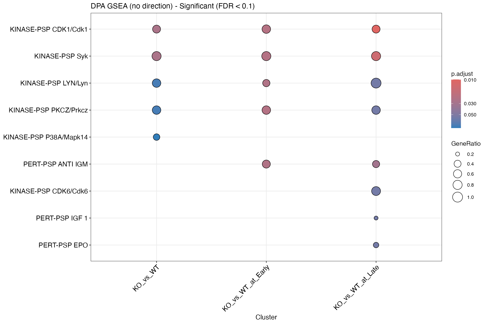
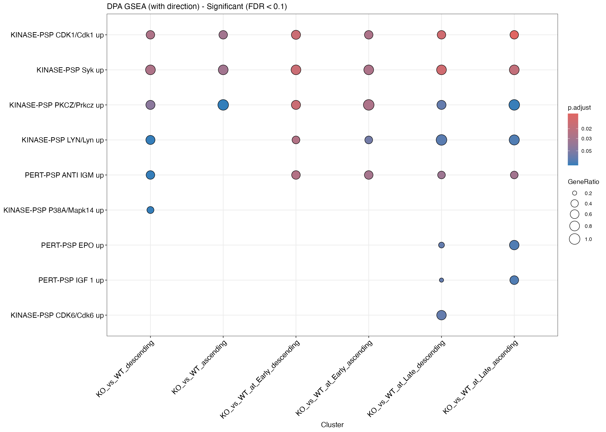
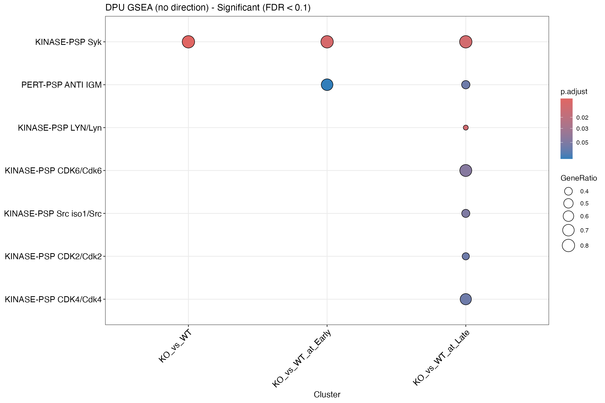
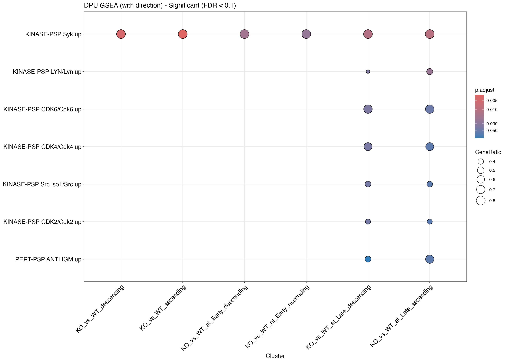
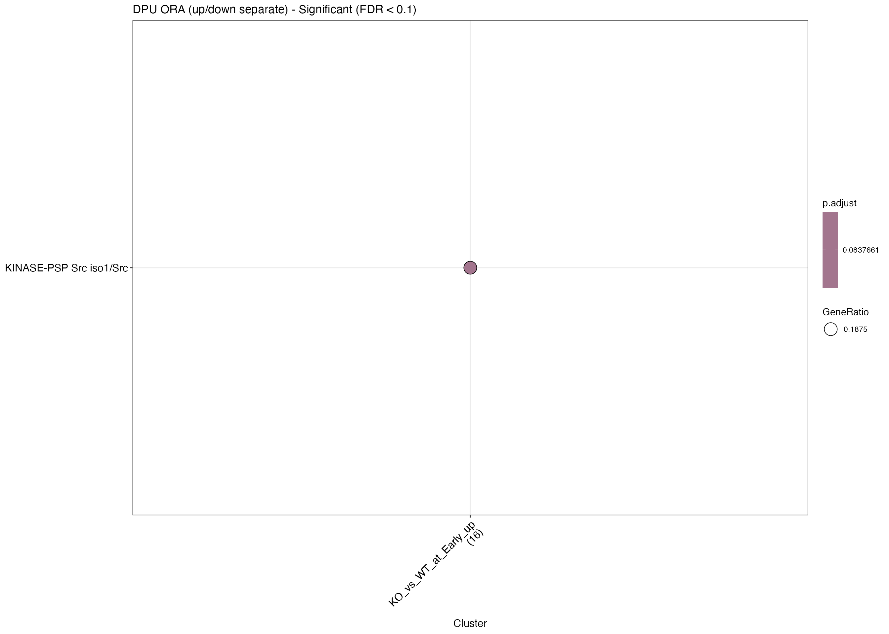

PTM-SEA: Kinase Activity Inference from Phosphoproteomics Data
Analysis_PTMSEA.RmdIntroduction
PTM-SEA (Post-Translational Modification Signature Enrichment Analysis) uses curated phosphosite signatures from PTMsigDB to infer kinase activities from phosphoproteomics data. This vignette demonstrates three approaches:
- GSEA without direction - ignores ;u/;d suffixes in PTMsigDB
- GSEA with direction - splits pathways into _up and _down sets
- ORA with direction - over-representation analysis on significant sites
We analyze both DPA (Differential PTM Abundance) and DPU (Differential PTM Usage) results.
Load Data and PTMsigDB
library(prophosqua)
library(clusterProfiler)
library(dplyr)
library(enrichplot)
library(fgsea)
library(purrr)
# Load example data
example_path <- here::here("data", "combined_test_diff_example.rds")
example_data <- readRDS(example_path)
data_info <- tibble(
Property = c("Rows", "Columns", "Contrasts"),
Value = c(nrow(example_data), ncol(example_data),
paste(unique(example_data$contrast), collapse = ", "))
)
knitr::kable(data_info, caption = "Example Data")| Property | Value |
|---|---|
| Rows | 105824 |
| Columns | 56 |
| Contrasts | KO_vs_WT, KO_vs_WT_at_Early, KO_vs_WT_at_Late, KO_vs_WT_at_Uninfect |
# Download PTMsigDB signatures
gmt_path <- download_ptmsigdb(species = "mouse", output_dir = tempdir())
pathways_raw <- fgsea::gmtPathways(gmt_path)
# Trim pathways to 11-mer (default) to increase overlap with our data
pathways <- trim_ptmsigdb_pathways(pathways_raw, trim_to = "11")Overlap Statistics
Understanding the overlap between our data and PTMsigDB is crucial for interpreting results.
# Our data: unique flanking sequences (trimmed to 11-mer to match pathways)
our_sequences <- example_data |>
pull(SequenceWindow) |>
trimws() |>
toupper() |>
unique()
our_sequences_trimmed <- our_sequences |>
map_chr(~prophosqua:::trim_flanking_seq(.x, trim_to = 11L))
our_site_ids <- paste0(our_sequences_trimmed, "-p")
n_our_sites <- n_distinct(our_site_ids)
# PTMsigDB: unique site IDs (strip ;u/;d for comparison)
ptmsigdb_ids_raw <- pathways |>
unlist() |>
unique()
ptmsigdb_ids_stripped <- ptmsigdb_ids_raw |>
gsub(";[ud]$", "", x = _) |>
unique()
n_ptmsigdb_sites <- length(ptmsigdb_ids_stripped)
# Overlap
overlap_ids <- intersect(unique(our_site_ids), ptmsigdb_ids_stripped)
n_overlap <- length(overlap_ids)
overlap_stats <- tibble(
Metric = c("Our data (unique sequences)", "PTMsigDB (unique site IDs)", "Overlap",
"% of our sites", "% of PTMsigDB sites"),
Value = c(n_our_sites, n_ptmsigdb_sites, n_overlap,
round(100 * n_overlap / n_our_sites, 2),
round(100 * n_overlap / n_ptmsigdb_sites, 2))
)
knitr::kable(overlap_stats, caption = "Overlap Statistics (11-mer)")| Metric | Value |
|---|---|
| Our data (unique sequences) | 21653.00 |
| PTMsigDB (unique site IDs) | 1746.00 |
| Overlap | 331.00 |
| % of our sites | 1.53 |
| % of PTMsigDB sites | 18.96 |
The low overlap is expected because:
- PTMsigDB contains curated kinase-substrate relationships (~1,700 unique sites)
- Our phosphoproteomics data measures ~20,000+ sites
- Most measured sites have no known kinase annotation
DPA Analysis (Differential PTM Abundance)
DPA uses raw phosphosite fold changes, which include both true signaling changes and protein abundance effects.
Prepare DPA Data
# Use t-statistic for ranking
prep_dpa <- ptmsea_data_prep(
data = example_data,
stat_column = "statistic.site",
seq_window_col = "SequenceWindow",
contrast_col = "contrast"
)
dpa_prep_info <- tibble(
Contrast = names(prep_dpa$ranks),
Sites = map_int(prep_dpa$ranks, length)
)
knitr::kable(dpa_prep_info, caption = "DPA Contrasts Prepared")| Contrast | Sites |
|---|---|
| KO_vs_WT | 21652 |
| KO_vs_WT_at_Early | 21652 |
| KO_vs_WT_at_Late | 21652 |
| KO_vs_WT_at_Uninfect | 21652 |
DPA: GSEA without Direction
Standard GSEA ignoring the ;u/;d direction suffixes in PTMsigDB.
results_dpa_nodir <- run_ptmsea(
ranks_list = prep_dpa$ranks,
pathways = pathways,
min_size = 3,
max_size = 500,
n_perm = 1000,
pvalueCutoff = 0.1
)
dpa_nodir_info <- tibble(
Contrast = names(results_dpa_nodir),
`Significant (FDR < 0.1)` = map_int(results_dpa_nodir, ~nrow(.x@result))
)
knitr::kable(dpa_nodir_info, caption = "DPA GSEA (no direction) Results")| Contrast | Significant (FDR < 0.1) |
|---|---|
| KO_vs_WT | 5 |
| KO_vs_WT_at_Early | 5 |
| KO_vs_WT_at_Late | 8 |
| KO_vs_WT_at_Uninfect | 0 |
merged_dpa_nodir <- merge_result(results_dpa_nodir)
dotplot(merged_dpa_nodir, showCategory = 10,
title = "DPA GSEA (no direction) - Significant (FDR < 0.1)") +
ggplot2::theme(axis.text.x = ggplot2::element_text(angle = 45, hjust = 1))
DPA: GSEA with Direction
Splits pathways into _up and _down sets, runs ascending and descending.
results_dpa_dir <- run_ptmsea_up_down(
ranks_list = prep_dpa$ranks,
pathways = pathways,
min_size = 3,
max_size = 500,
n_perm = 1000,
pvalueCutoff = 0.1
)
dpa_dir_info <- tibble(
Contrast = names(results_dpa_dir),
`Significant (FDR < 0.1)` = map_int(results_dpa_dir, ~nrow(.x@result))
)
knitr::kable(dpa_dir_info, caption = "DPA GSEA (with direction) Results")| Contrast | Significant (FDR < 0.1) |
|---|---|
| KO_vs_WT_descending | 6 |
| KO_vs_WT_ascending | 3 |
| KO_vs_WT_at_Early_descending | 5 |
| KO_vs_WT_at_Early_ascending | 5 |
| KO_vs_WT_at_Late_descending | 8 |
| KO_vs_WT_at_Late_ascending | 7 |
| KO_vs_WT_at_Uninfect_descending | 0 |
| KO_vs_WT_at_Uninfect_ascending | 0 |
merged_dpa_dir <- merge_result(results_dpa_dir)
dotplot(merged_dpa_dir, showCategory = 10,
title = "DPA GSEA (with direction) - Significant (FDR < 0.1)") +
ggplot2::theme(axis.text.x = ggplot2::element_text(angle = 45, hjust = 1))
DPU Analysis (Differential PTM Usage)
DPU uses protein-normalized phosphosite fold changes, representing true stoichiometry changes independent of protein abundance.
Prepare DPU Data
# Use t-statistic for DPU ranking
prep_dpu <- ptmsea_data_prep(
data = example_data,
stat_column = "tstatistic_I",
seq_window_col = "SequenceWindow",
contrast_col = "contrast"
)
dpu_prep_info <- tibble(
Contrast = names(prep_dpu$ranks),
Sites = map_int(prep_dpu$ranks, length)
)
knitr::kable(dpu_prep_info, caption = "DPU Contrasts Prepared")| Contrast | Sites |
|---|---|
| KO_vs_WT | 20920 |
| KO_vs_WT_at_Early | 20920 |
| KO_vs_WT_at_Late | 20920 |
| KO_vs_WT_at_Uninfect | 20920 |
DPU: GSEA without Direction
results_dpu_nodir <- run_ptmsea(
ranks_list = prep_dpu$ranks,
pathways = pathways,
min_size = 3,
max_size = 500,
n_perm = 1000,
pvalueCutoff = 0.1
)
dpu_nodir_info <- tibble(
Contrast = names(results_dpu_nodir),
`Significant (FDR < 0.1)` = map_int(results_dpu_nodir, ~nrow(.x@result))
)
knitr::kable(dpu_nodir_info, caption = "DPU GSEA (no direction) Results")| Contrast | Significant (FDR < 0.1) |
|---|---|
| KO_vs_WT | 1 |
| KO_vs_WT_at_Early | 2 |
| KO_vs_WT_at_Late | 7 |
| KO_vs_WT_at_Uninfect | 0 |
merged_dpu_nodir <- merge_result(results_dpu_nodir)
dotplot(merged_dpu_nodir, showCategory = 10,
title = "DPU GSEA (no direction) - Significant (FDR < 0.1)") +
ggplot2::theme(axis.text.x = ggplot2::element_text(angle = 45, hjust = 1))
DPU: GSEA with Direction
results_dpu_dir <- run_ptmsea_up_down(
ranks_list = prep_dpu$ranks,
pathways = pathways,
min_size = 3,
max_size = 500,
n_perm = 1000,
pvalueCutoff = 0.1
)
dpu_dir_info <- tibble(
Contrast = names(results_dpu_dir),
`Significant (FDR < 0.1)` = map_int(results_dpu_dir, ~nrow(.x@result))
)
knitr::kable(dpu_dir_info, caption = "DPU GSEA (with direction) Results")| Contrast | Significant (FDR < 0.1) |
|---|---|
| KO_vs_WT_descending | 1 |
| KO_vs_WT_ascending | 1 |
| KO_vs_WT_at_Early_descending | 1 |
| KO_vs_WT_at_Early_ascending | 1 |
| KO_vs_WT_at_Late_descending | 7 |
| KO_vs_WT_at_Late_ascending | 7 |
| KO_vs_WT_at_Uninfect_descending | 0 |
| KO_vs_WT_at_Uninfect_ascending | 0 |
merged_dpu_dir <- merge_result(results_dpu_dir)
dotplot(merged_dpu_dir, showCategory = 10,
title = "DPU GSEA (with direction) - Significant (FDR < 0.1)") +
ggplot2::theme(axis.text.x = ggplot2::element_text(angle = 45, hjust = 1))
DPU: ORA with Direction
Over-representation analysis on significant sites for all contrasts.
When fc_col is provided, sites are split into up-regulated
and down-regulated sets for separate ORA tests.
# Convert pathways to TERM2GENE format and strip direction suffixes
term2gene <- ptmsigdb_to_term2gene(pathways) |>
mutate(gene = gsub(";[ud]$", "", gene))
# Get all PTMsigDB site IDs (stripped, without ;u/;d)
ptmsigdb_sites <- unique(term2gene$gene)
# Run ORA for each contrast (up and down separately)
contrasts <- unique(example_data$contrast)
ora_prep_list <- contrasts |>
set_names() |>
map(function(contrast_name) {
contrast_data <- example_data |>
filter(contrast == contrast_name)
prep_ora <- ptmsea_ora_prep(
data = contrast_data,
ptmsigdb_sites = ptmsigdb_sites,
score_col = "FDR_I",
fc_col = "diff_diff",
threshold = 0.1
)
tibble(
Contrast = contrast_name,
Up = length(prep_ora$enriched_up),
Down = length(prep_ora$enriched_down),
Background = length(prep_ora$background)
)
}) |>
bind_rows()
ora_results <- contrasts |>
map(function(contrast_name) {
contrast_data <- example_data |>
filter(contrast == contrast_name)
prep_ora <- ptmsea_ora_prep(
data = contrast_data,
ptmsigdb_sites = ptmsigdb_sites,
score_col = "FDR_I",
fc_col = "diff_diff",
threshold = 0.1
)
results <- list()
# ORA for up-regulated sites
if (length(prep_ora$enriched_up) > 0) {
ora_up <- enricher(
gene = prep_ora$enriched_up,
universe = prep_ora$background,
TERM2GENE = term2gene,
pvalueCutoff = 0.1
)
if (!is.null(ora_up) && nrow(ora_up@result) > 0) {
results[[paste0(contrast_name, "_up")]] <- ora_up
}
}
# ORA for down-regulated sites
if (length(prep_ora$enriched_down) > 0) {
ora_down <- enricher(
gene = prep_ora$enriched_down,
universe = prep_ora$background,
TERM2GENE = term2gene,
pvalueCutoff = 0.1
)
if (!is.null(ora_down) && nrow(ora_down@result) > 0) {
results[[paste0(contrast_name, "_down")]] <- ora_down
}
}
results
}) |>
list_flatten()
knitr::kable(ora_prep_list, caption = "ORA Preparation Summary")| Contrast | Up | Down | Background |
|---|---|---|---|
| KO_vs_WT | 40 | 21 | 323 |
| KO_vs_WT_at_Early | 16 | 5 | 323 |
| KO_vs_WT_at_Late | 22 | 5 | 323 |
| KO_vs_WT_at_Uninfect | 1 | 1 | 323 |
if (length(ora_results) > 0) {
merged_ora <- merge_result(ora_results)
if (nrow(merged_ora@compareClusterResult) > 0) {
print(dotplot(merged_ora, showCategory = 10,
title = "DPU ORA (up/down separate) - Significant (FDR < 0.1)") +
ggplot2::theme(axis.text.x = ggplot2::element_text(angle = 45, hjust = 1)))
}
}
Interpretation
- DPA results show kinase activity changes including protein abundance effects
- DPU results show kinase activity changes independent of protein abundance
Kinases appearing significant in DPU but not DPA represent genuine signaling changes. Kinases appearing in DPA but not DPU may be driven by protein abundance changes.
Session Info
## R version 4.5.2 (2025-10-31)
## Platform: aarch64-apple-darwin20
## Running under: macOS Tahoe 26.1
##
## Matrix products: default
## BLAS: /System/Library/Frameworks/Accelerate.framework/Versions/A/Frameworks/vecLib.framework/Versions/A/libBLAS.dylib
## LAPACK: /Library/Frameworks/R.framework/Versions/4.5-arm64/Resources/lib/libRlapack.dylib; LAPACK version 3.12.1
##
## locale:
## [1] en_US.UTF-8/en_US.UTF-8/en_US.UTF-8/C/en_US.UTF-8/en_US.UTF-8
##
## time zone: Europe/Zurich
## tzcode source: internal
##
## attached base packages:
## [1] stats graphics grDevices utils datasets methods base
##
## other attached packages:
## [1] purrr_1.2.0 fgsea_1.36.0 enrichplot_1.30.3
## [4] dplyr_1.1.4 clusterProfiler_4.18.1 prophosqua_0.2.0
##
## loaded via a namespace (and not attached):
## [1] DBI_1.2.3 gson_0.1.0 rlang_1.1.6
## [4] magrittr_2.0.4 DOSE_4.4.0 compiler_4.5.2
## [7] RSQLite_2.4.5 png_0.1-8 systemfonts_1.3.1
## [10] vctrs_0.6.5 reshape2_1.4.5 stringr_1.6.0
## [13] pkgconfig_2.0.3 crayon_1.5.3 fastmap_1.2.0
## [16] XVector_0.50.0 labeling_0.4.3 rmarkdown_2.30
## [19] ragg_1.5.0 bit_4.6.0 xfun_0.54
## [22] ggseqlogo_0.2 cachem_1.1.0 aplot_0.2.9
## [25] jsonlite_2.0.0 blob_1.2.4 BiocParallel_1.44.0
## [28] parallel_4.5.2 R6_2.6.1 bslib_0.9.0
## [31] stringi_1.8.7 RColorBrewer_1.1-3 jquerylib_0.1.4
## [34] GOSemSim_2.36.0 Rcpp_1.1.0 Seqinfo_1.0.0
## [37] bookdown_0.46 knitr_1.50 ggtangle_0.0.9
## [40] R.utils_2.13.0 IRanges_2.44.0 Matrix_1.7-4
## [43] splines_4.5.2 igraph_2.2.1 tidyselect_1.2.1
## [46] qvalue_2.42.0 yaml_2.3.11 codetools_0.2-20
## [49] lattice_0.22-7 tibble_3.3.0 plyr_1.8.9
## [52] withr_3.0.2 Biobase_2.70.0 treeio_1.34.0
## [55] KEGGREST_1.50.0 S7_0.2.1 evaluate_1.0.5
## [58] gridGraphics_0.5-1 desc_1.4.3 Biostrings_2.78.0
## [61] pillar_1.11.1 ggtree_4.0.1 stats4_4.5.2
## [64] ggfun_0.2.0 generics_0.1.4 rprojroot_2.1.1
## [67] S4Vectors_0.48.0 ggplot2_4.0.1 scales_1.4.0
## [70] tidytree_0.4.6 glue_1.8.0 gdtools_0.4.4
## [73] lazyeval_0.2.2 tools_4.5.2 data.table_1.17.8
## [76] ggiraph_0.9.2 fs_1.6.6 fastmatch_1.1-6
## [79] cowplot_1.2.0 grid_4.5.2 tidyr_1.3.1
## [82] ape_5.8-1 AnnotationDbi_1.72.0 nlme_3.1-168
## [85] patchwork_1.3.2 cli_3.6.5 rappdirs_0.3.3
## [88] textshaping_1.0.4 fontBitstreamVera_0.1.1 gtable_0.3.6
## [91] R.methodsS3_1.8.2 yulab.utils_0.2.2 sass_0.4.10
## [94] digest_0.6.39 fontquiver_0.2.1 BiocGenerics_0.56.0
## [97] ggrepel_0.9.6 ggplotify_0.1.3 htmlwidgets_1.6.4
## [100] farver_2.1.2 memoise_2.0.1 htmltools_0.5.9
## [103] pkgdown_2.2.0 R.oo_1.27.1 lifecycle_1.0.4
## [106] here_1.0.2 httr_1.4.7 GO.db_3.22.0
## [109] fontLiberation_0.1.0 bit64_4.6.0-1